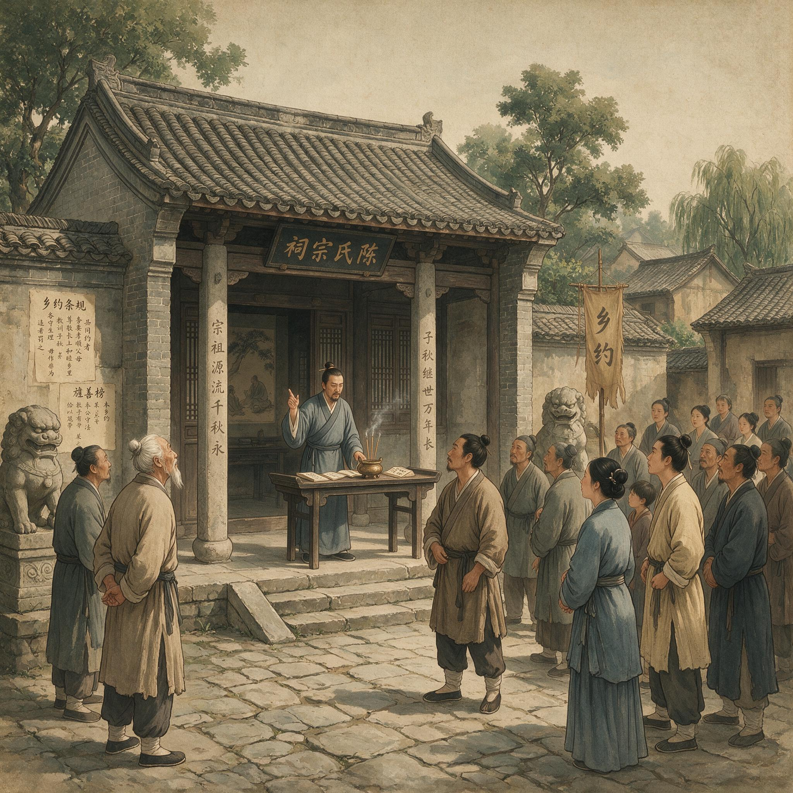

第 21 章
商贾座中问良知
听一个贩盐的布衣讲良知，与在书院里听进士讲良知，从来不是一回事。这个差别在王阳明身后才显出真正的分量：乡约运动给心学铺开了基层网络，也把网络里最异质的人群推到了教义面前。他们不读《

明代乡村推行乡约，民众集会的制度实践场景
AI 生成插图，非史实影像。
大学章句》，不考科举，人生框架中没有“修身齐家治国平天下”，但每日都在处理是非、利害与信用。
致良知能否在他们的经验世界里找到对应，不再是传播技巧问题，而是教义会不会因此变形的制度问题。
安丰场的灶丁、淮安码头的船工、徽州的商人、景德镇的陶匠，这些人群在嘉靖初年并非边角料。
盐业、漕运、陶瓷、纺织的大规模生产与长途贸易，正催生出一个庞大的工商业人口。两淮盐场的灶丁数以万计，运河沿线的漕运工人、码头脚夫、船户构成了一条流动的人口链条。他们脱离了传统宗族—土地绑定，生计逻辑、社会关系和道德经验与定居农耕人口截然不同。
一个灶丁每日面对的是盐场灶户之间的分工协作、与盐商的交易谈判、对官府盐课的应付；
一个漕运船工面对的是船主与雇工的关系、沿途关卡的打点、货物交接时的信用担保。这些经验里当然有是非之心。但这些是非之心的运作方式，与士人在书斋里面对经典时的诚意正心，能是一回事吗？
嘉靖八年王阳明逝世之后，这个问题从理论推演变成了王门弟子之间实实在在的路线分歧。分歧最初不在教义本身，而在讲学的场所、对象与方式。
邹守益在江西安福建立惜阴会，走的仍是书院路线：依托宗族、面向士子、以经典讲读为骨架，良知之学嵌入既有制度框架之中。欧阳德在南直隶主持的讲会规模更大，动辄数百人，但核心参与者依旧是地方生员、退职官员和有一定文化基础的乡绅。这种模式的好处是稳——组织形式、话语方式和社会资源调动方式，都与明代地方社会既有的权力结构高度兼容。
但局限同样明显：它触达不了那些不在宗族网络核心位置、不拥有科举身份、甚至不具备完整里甲户籍的人群。
而恰恰是这些人群，在嘉靖年间正以惊人的速度膨胀。王艮的出现，把这个问题从隐性的张力推成了显性的冲突。
王艮，原名王银，泰州安丰场人。安丰场是两淮盐区的重要盐场，王艮的家庭世代以煮盐为业，本人早年从事贩盐——处在生产与流通交界处的角色。贩盐需要与灶户打交道，与各地商人周旋，应对沿途税关和巡检司的盘查，在价格波动中做出判断。这种生活训练出来的不是经生式的记诵与训诂，而是对人情、时势、利害的高度敏感和快速反应。
据记载，王艮在经商途中常携带《孝经》《论语》《大学》，遇到人就请教疑难。这个细节的关键不在于他好学——好学的人很多——而在于他的学习路径与士人完全相反。
士人先读经、后入世，经典文本构成理解世界的先在框架；王艮先在世中、后求诸经，生活经验构成他判断经典意义的筛选器。什么东西能在经验中得到印证，他就信；什么东西与经验相悖，他就疑。
正德十五年，王艮以布衣之身执贽王门。这个举动本身就意味深长。王阳明当时已是名满天下的南赣巡抚，门下弟子多是进士、举人或地方士绅。
王艮不仅没有科举功名，连生员都不是——他是一个商人，一个灶户之子，一个在身份等级上处于士人阶层之下的人。他去拜师，不是以学生身份接受一套完整知识体系，而是带着自己已经从贩盐生涯中提炼出来的问题与判断，去寻求印证或辩驳。
据说他第一次见王阳明时，就与之反复辩论，直到深夜方才服膺。这个“服膺”不是被动接受，而是经过激烈交锋后的主动认可。它预设了王艮在拜师之前，已经拥有一套足以与王阳明对话的思想资源。
这套思想资源不是经典文本的系统研读，而是从灶火、盐仓、码头、商铺这些具体场所中生长出来的、关于人应该如何判断是非、如何对待利害、如何在复杂社会关系中安身立命的朴素认知。
王艮后来把它提炼为一句话：“百姓日用而不知。”这句话出自《周易·系辞》，原意是说“道”就在百姓日常生活中运行，只不过百姓没有意识去认知它。但王艮的用法不同。
他不是在描述哲学命题，而是在做出教学判断：既然“道”就在百姓日用之中，讲学就不需要从经典训诂开始，不需要预设听者具备文本解读能力，只需要从他们已有的生活经验出发，点醒他们本已具备的是非知觉。这个判断一旦付诸实践，讲学的场所、方式和话语风格就会彻底改变。
王艮在泰州安丰场讲学时，不讲《大学》的“三纲领八条目”，不讲“格物致知”的训诂争议，而是直接与灶户谈煮盐的火候、与盐丁谈晒盐的辛苦、与商人谈买卖中的诚信与欺诈。他从这些具体的劳作和交易中指出，哪些行为是“从良知上发出来”的，哪些是“从私意上安排出来”的。
一个灶户知道偷工减料会出次品盐，这个“知道”本身就是良知的作用；一个商人在交易中感到不安，这个“不安”就是良知的发见。王艮做的，不是把一套外在道德规范灌输给这些人，而是让他们意识到自己内心本来就有判断是非的标准。这个标准比官府的法令更根本，比习俗的惯例更内在，比利益的算计更直接。这种讲学方式的效果是惊人的。
据泰州学派的后续记载，安丰场的灶丁、盐工、甚至周边地区的农民和手工业者，大量涌入王艮的讲堂。他们听不懂高深的义理辨析，但听得懂王艮用煮盐、贩盐、交税、应役这些日常事务来讲解的“良知”。
在这些人看来，良知不是悬在经典里的高远道理，而是他们在每一次交易、每一次劳作、每一次与人打交道时都能感受到的那个“心里有数”。王艮告诉他们，这个“心里有数”就是圣贤之学的根基。不需要读书中举，不需要改变身份，就在他们现在的位置上，就可以做圣贤。
这是一个革命性的命题。它把致良知的教法从士人阶层解放出来，使之成为任何一个具有基本道德直觉的人都可以直接进入的路径。
但它也埋下了一个深刻的危险：如果良知就是“心里有数”，那么谁来界定这个“数”是不是良知？一个商人在交易中压价成功，心里觉得“这买卖做得漂亮”，这是良知的发用还是私意的满足？一个灶丁在应付官府盐课时设法隐瞒产量，心里觉得“不这样活不下去”，这是良知的权变还是私欲的遮蔽？
王艮本人当然可以分辨这些——他毕竟有着长期的自我修炼和与王阳明的深入辩难。但对于那些刚刚接触心学、缺乏任何经典训练和师门规约的下层信众而言，“百姓日用即道”很容易滑向“我做的就是我信的，我信的就是良知”。
嘉靖八年王阳明逝世后，王艮的讲学活动进入了更激进的阶段。他头戴古冠服，乘坐自制的蒲轮车，周流天下。
这辆车值得仔细描述，因为它本身就是一个讲学宣言。蒲轮车在汉代是朝廷征聘隐士高贤所用的礼器，用蒲草包裹车轮以减少颠簸，象征对贤者的尊重。王艮一个布衣，自造蒲轮车、自戴古冠服，招摇过市，所到之处不拘场所，市井、盐场、漕船码头皆可成为讲坛。这个行为在当时引起的震动，今天可能难以体会。
在明代严格的身份等级制度下，服饰、车舆、仪仗都有明确规制，什么人能戴什么冠、坐什么车，是法律问题，不是审美问题。王艮以商贾之身而服古贤之冠、乘征聘之车，在官府和士绅看来是僭越，在正统儒者看来是狂妄。
但在下层民众看来，这个“戴古冠的先生”恰恰打破了“道”被士人垄断的格局。他让圣贤之学看起来不再是书斋和官衙里的专利，而是可以走在路上、停在码头、坐在盐仓门口的东西。
王艮在漕运码头讲学的场景尤其值得注意。明代漕运是一个高度组织化但也高度腐败的系统。运军、船户、闸官、仓场吏役之间形成了复杂的利益链条，夹带私货、虚报损耗、贿赂闸官是常态。在这种环境下讨生活的人，其道德经验不是黑白分明的善恶对立，而是各种灰色的、不得已的、互相妥协的行为选择。
一个漕船上的船工，他的良知如何运作？他知道夹带私货违禁，但不夹带就养不活一家人；他知道给闸官塞钱不对，但不塞钱就过不了闸，误了期限全家都要受罚。
当王艮在这样的码头上讲“良知即道”时，他面对的不是书院里那些可以抽象讨论“天理人欲”的士子，而是一群每天都在天理与人欲的夹缝中挣扎的人。这些人需要的不是更精微的义理辨析，而是一个能够在他们的具体处境中做出道德判断的支点。
据泰州学派的传述，王艮对这些人讲，夹带私货时心里会不安，这个不安就是良知；塞钱给闸官时脸上会发烧，这个发烧也是良知。他不是来禁止他们做那些事——他们有他们的难处——而是告诉他们不要把这个不安和发烧当成没用的东西扔掉。它有用，它是你心里最真的那个东西。你信它，它就会带你走出来。
这种讲法的高明之处在于，它不站在道德高地上指责听者的行为，而是从听者自己内心的道德感受出发，让他们意识到自己并非道德虚无者。他们的内心其实一直在做出判断，只是这个判断被生存压力、被习俗惯例、被“大家都这样”的从众心理压制了。王艮所做的，是激活这个被压制的判断力，让它从背景噪音变成前景声音。
但问题也恰恰出在这里。当“不安”和“发烧”被等同于良知的发用时，下一步的推论就不可避免：如果一个人做某件事时心里没有不安，是不是就意味着这件事符合良知？如果一个商人在交易中成功欺骗了对手，心里不仅没有不安，反而觉得得意——这是不是意味着他的“良知”认可了欺骗？
王艮本人当然不会同意这种推论。他会说，那个“得意”不是良知，而是私意遮蔽了良知，就像乌云遮住了太阳。但问题在于，在缺乏经典训练和师门规约的情况下，一个普通信众如何区分“良知”与“私意”？王艮的教法给出了入口——从自己的内心感受出发——却没有给出足够清晰的边界。这个入口一旦打开，进来的人会往哪个方向走，就不再是王艮能控制的了。
嘉靖十年以后，泰州学派迅速膨胀，成员包括灶丁、盐贩、陶匠、农夫、小商贩乃至游民。这些人的讲学风格越来越偏离书院传统，出现了所谓“猖狂”一路。他们在讲会上放言高论，不拘礼节，有人甚至以“见在良知”为名，把一切率性而为都解释成良知的自然流露。
这种风气引起了王门正统派弟子的高度警觉。钱德洪后来批评这一路向时，用过“猖狂者参之以情识”的措辞。“猖狂者”指那些不受经典约束、不循师门规约、只凭一己之见讲学的人；“情识”则是理学传统中的关键概念，指被情感和私意支配的意识状态，与良知的纯然天理相对立。
“参之以情识”，就是把私情私意掺杂进良知之学里，把主观的情绪、欲望、偏见当成了良知的发用。在钱德洪看来，这些人讲“良知”，其实讲的是自己的脾气；讲“率性”，其实率的是自己的欲望。
但问题在于，一旦“百姓日用即道”被推到极致，从教义内部就很难分辨“良知”与“情识”——因为它们都表现为“我心里觉得”。
邹守益的批评同样尖锐。他用“以任情为率性，以恣肆为自然”来概括泰州后学的危险。任情，就是放任情感；率性，在理学传统中原指遵循天命之性。两者在理论上截然不同，但在泰州学派的讲学实践中被混为一谈。
一个灶丁在讲会上拍案大叫，说这就是他良知的发露；一个商人在交易中耍了手段，说这是良知在事上的权变。这些行为在邹守益看来，不是良知的流行，而是私欲的放纵。
但他面临一个困境：如果良知之学真的不需要经典训诂和师门传承，那么他凭什么权威去判定这些人的“良知”是假的？这个困境是结构性的，不是哪一个人的错误造成的。
王艮把心学推向了平民社会，这个举动本身没有错——甚至它是心学制度化的必然延伸。乡约实践已经证明，心学要介入地方秩序，就必须触达那些不属于士人阶层的人群。但一旦触达了这些人群，致良知的教法就不得不面对一个它最初没有充分准备的问题。
良知之学是在士人的书斋和书院里锻造出来的，它的自我校准机制——经典、师承、同门辩难——都是士人文化的产物。当这套教法脱离士人文化语境，进入到一个经典不再被阅读、师承不再被尊重、辩难不再有共同话语基础的社会空间时，它靠什么来防止自身的庸俗化和扭曲？
王艮给出的答案是：靠良知本身。他相信，良知人人本具，只要点醒它，它自己就能分辨是非，不需要外在的经典和师承来担保。这是一种对良知自足性的彻底信任。
但历史证明，这种信任太过乐观。良知在脱离经典和师承的约束后，很容易被“情识”劫持。因为“情识”也来自内心，也表现为强烈的“我觉得”。在缺乏外部参照系的情况下，一个人几乎不可能区分“良知的呼声”和“私欲的伪装”。
这个困境在嘉靖中期的王门内部引发了持续分裂。以邹守益、欧阳德、钱德洪为代表的“书院路线”，坚持致良知必须在经典框架内、在师门规约下、在与同门的辩难中循序渐进地展开。他们不反对向下层社会传播心学，但坚持传播内容不能因为对象文化水平低就被简化或变形。良知可以有不同的入门路径，但路径的终点必须相同，那就是通过持续的修身功夫达到对天理的透彻理解。
而以王艮及其泰州后学为代表的“讲会路线”，则主张良知之学应该从听者的实际处境出发，用他们听得懂的语言、在他们日常经验的范围内展开，不必拘泥于经典文本和师门规矩。在他们看来，良知本身就是最高权威，经典不过是良知的注脚，师承不过是良知的助缘。
这两条路线的分歧，在嘉靖八年王阳明逝世时还只是暗流涌动，到了嘉靖十年以后，已经发展成公开论争。论争的焦点表面上是教学方法——要不要读经、要不要遵守师门规矩——但实质上是心学的社会基础问题。
书院路线依赖士人阶层和宗族网络，传播方式自上而下，从精英到大众，从经典到生活。讲会路线依赖商贾、工匠、灶户这些脱离了传统宗族—土地绑定的人群，传播方式水平扩散，通过市井网络、行商路线、漕运通道在陌生人之间传递。
这两种社会基础对教义的需求不同：士人需要的是在经典传统内部进行深化和细化的解释，以应对科举、仕途和宗族治理中的具体问题；商贾和工匠需要的是在日常劳作和交易中可以直接运用的道德判断工具，以应对市场风险、契约信用和身份流动带来的不确定性。
心学能否同时满足这两种需求？从嘉靖十年以后的历史来看，答案是否定的。不是心学的教义本身有缺陷，而是两种需求指向了不同方向。
精英化的书院路线要求教义保持足够的复杂性和深度，以容纳经典的权威和师门的传承；平民化的讲会路线要求教义保持足够的简洁性和可操作性，以便在没有经典和师承的情况下也能被理解和运用。这两者之间的张力，在理论上或许可以调和，但在组织实践和社会资源分配上却几乎不可调和。
书院需要资金、藏书、场地和稳定的师资，这些资源主要来自士绅阶层的捐赠和地方政府的支持；讲会需要流动性、灵活性和对下层社会的渗透力，这些资源主要来自商人资助、行会组织和市井网络传播。当资源有限时，两条路线之间就不仅是教义分歧，也是利益冲突。
王艮在嘉靖十九年去世。他生前创建的泰州学派，在他死后迅速分化。一部分弟子继承了他的平民讲学路线，继续在灶户、陶匠、漕工中传播良知之学，但讲法越来越激进，越来越脱离经典文本，越来越强调“当下即是”而忽略修身功夫。另一部分弟子试图向书院路线靠拢，将王艮的教法纳入经典解释框架，以求得正统派认可。但这种靠拢本身就意味着对王艮最核心主张的背叛。如果良知之学最终还是要回到经典训诂和士人身份，那么“百姓日用即道”的突破性意义何在？
这个分裂不是王艮个人的失败，而是心学在社会扩散过程中必然遭遇的结构性困境。
一种学说在向下层社会传播时，必须简化自身的表达方式，必须寻找与听者经验世界的接合点，必须容忍甚至鼓励听者用自己的语言和理解来重新诠释教义。这个过程必然会带来教义的变形。不是某个人故意歪曲，而是不同的社会经验会自然地把同一个概念引向不同的语义方向。
一个士人听到“良知”，想到的是《孟子》的“良知良能”和《大学》的“明明德”；一个商人听到“良知”，想到的是买卖中的诚信和契约中的信用；一个灶丁听到“良知”，想到的是劳作中的勤惰和邻里间的义气。这些理解都有合理性，但它们不是一回事。
当这些不同的理解被统摄在同一个“致良知”的名目下时，学派的统一性就成了一种幻象。钱德洪和邹守益看到了这种危险，但他们的应对方式——强化经典训练、强调师门传承、批评“猖狂者参之以情识”——实际上是在拒绝心学向下层社会扩散的必然性。
他们希望良知之学保持其在士人文化中的纯粹性，但这种纯粹性是以牺牲心学的社会广度为代价的。
而王艮和泰州学派选择了广度，付出的代价是深度和精确性。这两条路线之间的矛盾，在嘉靖八年王阳明逝世时还只是潜在张力，到了嘉靖中期已经发展成无法弥合的裂痕。
裂痕的深处，是心学作为一个学派在组织化过程中必然面对的问题：谁来界定什么是“真正的”良知之学？是那些拥有经典解释权和师门传承的正统弟子，还是那些在广阔社会空间中用自己的生命经验来验证和诠释良知的平民信众？这个问题的答案，取决于心学究竟想成为什么——是一个在士人文化内部传承的精英学派，还是一个能够穿透社会各阶层的普遍教义？
嘉靖八年的王门弟子还不需要正面回答这个问题，因为宗师在世时，他的权威足以压制一切分歧。但宗师一死，分裂就不可避免。
这个分裂的压力，并不仅仅是王门内部的宗派之争。它背后是一个更大的历史变动：明中叶商品经济的发展，正在催生出一个数量庞大、经济实力日益增长但政治身份仍然低下的工商业阶层。
这个阶层需要一套能够安顿其道德生活的思想资源，而心学恰恰在此时提供了“百姓日用即道”的入口。但心学的正统派还没有准备好接纳这个阶层作为平等的参与者。他们仍然在用士人的标准来衡量什么是“真正的”学问。这种错位，使得心学在向下层社会扩散的同时，也在内部积累着分裂的能量。
嘉靖八年，王阳明在远征广西的途中病逝。他临终前，弟子问他有何遗言，他说：“此心光明，亦复何言。”这句话被后世奉为心学精神的最高表达。但在这句话背后，是他留下的一个正在急速膨胀、内部张力日益加剧的学派。
这个学派拥有遍布南直隶、江西、浙江、湖广的组织网络，拥有从士大夫到灶丁的广泛信众，拥有从书院讲经到码头说法的多元传播方式。但它也面临着深刻的内部矛盾：精英与平民之间、经典与经验之间、师承与自悟之间、修身功夫与当下即是之间的张力，正在把这个学派拉向不同的方向。
王艮的蒲轮车还在路上走着。他戴着古冠服，穿过盐场、码头、市镇，把良知之学带给那些从未进入过书院的人。
他所到之处，人群聚集，听他讲“百姓日用即道”。那些灶丁、船工、商贩在听讲时眼睛发亮——他们第一次被告知，自己心里本来就有圣贤的根基。
但在路的另一端，钱德洪和邹守益正在书院里忧虑地注视着这一切。他们看到的是，良知之学正在被稀释、被曲解、被情识所劫持。他们想要守住经典和师承的门槛，但门槛一旦设下，那些刚刚跨入心学之门的下层信众就会被挡回去。这两条路线之间的张力，在王阳明逝世后的十几年里持续积累，最终将在嘉靖后期的学派分裂中全面爆发。
但在爆发之前，它还必须在另一个层面上接受检验。商贾座中问良知所带来的制度转化压力，已经不再只是民间讲学内部的风格之争。它迫使心学回答一个更根本的问题：当良知之学离开书斋与书院，进入盐场、码头、市井这些国家权力与商业利益交错的空间之后，它究竟是成为一种组织下层社会的民间力量，还是能够被重新纳入国家治理的框架？
这个问题不问到国家治理层面，就不会真正了结。心学内部“精英书院”与“平民讲会”两条路线的裂痕，正是这个悬而未决的问题在学派身体上留下的第一道深刻纹路。